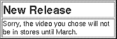

Table of Contents
Table of Contents  Next Section
Table of Contents
Next Section
Table of Contents  Previous Section
Previous Section

Figure 32. An Alert Panel
To use this component, you simply declare its position within the HTML page and give it a name:
<HTML>The declarations file specifies the value for each of the panel's attributes, either by assigning a constant value or by binding the attributes value to a variable in the component's code (as with the alertString and infoString attributes here):
<HEAD>
<TITLE>Alert</TITLE>
</HEAD>
<BODY>
<WEBOBJECT NAME = "ALERT"></WEBOBJECT>
</BODY>
</HTML>
ALERT: AlertPanel {
alertString = alertTitle;
alertFontColor = "#A00000";
alertFontSize = 6;
infoString = alertDescription;
infoFontSize = 4;
infoFontColor = "#500000";
tableWidth = "50%";
};
The component's code defines the alertTitle and alertDescription instance variables or methods, which set the text that's displayed in the upper and lower panes of the alert panel. The alertDescription method could, for example, consult a database to determine the release date of the video. WebObjects Builder makes working with reusable components such as AlertPanel even easier. Component clients can simply drag the alert panel into their components and use the Inspector to set the bindings. They don't need to manually edit the declarations file to set these bindings. To set this up, you, as the component creator, edit a file named AlertPanel.api specifying both required and optional attributes. You could, for example, export only the alertTitle and infoString attributes (leaving the other attributes private) using this AlertPanel.api file:
Required = (alertTitle, infoString);See the WebObjects Tools and Techniques online book for more information.
Optional = ();
Table of Contents Next Section